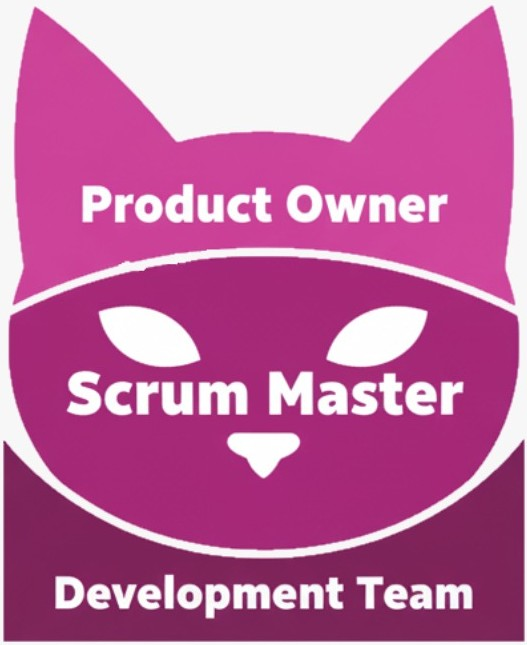

Metodologías Ágiles
Las Metodologías Ágiles son un conjunto de prácticas y principios que promueven la colaboración, la adaptabilidad y la entrega continua de valor en el desarrollo de software. Buscan responder de manera flexible a los cambios y centrarse en las necesidades reales del cliente.
Principios Ágiles
Basados en el Manifiesto Ágil (2001), sus principios más importantes son:
- La colaboración con el cliente por encima de la negociación de contratos.
- El trabajo en equipo y la comunicación constante.
- La respuesta rápida al cambio en lugar de seguir estrictamente un plan.
- El software funcionando como principal medida de progreso.
scrum
Scrum es una metodología ágil enfocada en entregar productos de manera incremental y iterativa mediante ciclos llamados Sprints.
Principios
- Transparencia, inspección y adaptación.
- Trabajo colaborativo y autoorganizado.
- Enfoque en resultados funcionales al final de cada Sprint.
Roles
- Product Owner: define la visión del producto y prioriza el backlog.
- Scrum Master: facilita el proceso y elimina obstáculos.
- Equipo de desarrollo: crea el producto y organiza su trabajo.
Ceremonias
- Sprint Planning: planificación del trabajo del Sprint.
- Daily Scrum: reunión diaria de seguimiento (máx. 15 min).
- Sprint Review: revisión del trabajo terminado.
- Sprint Retrospective: análisis del proceso para mejorar.
Artefactos
- Product Backlog: lista priorizada de requerimientos del producto.
- Sprint Backlog: tareas seleccionadas para el Sprint actual.
- Incremento: resultado funcional y entregable del Sprint.
kanban
Kanban se basa en la visualización del flujo de trabajo para mejorar la eficiencia y detectar cuellos de botella.Utiliza un tablero Kanban dividido en columnas como “Por hacer”, “En proceso” y “Hecho”.
Principios
- Visualizar el trabajo.
- Limitar el trabajo en progreso (WIP).
- Gestionar el flujo y buscar mejora continua.
Roles
- No define roles fijos, pero se centra en la autonomía del equipo y la colaboración.
Ceremonias
- No hay ceremonias obligatorias, pero suelen incluir revisiones periódicas del flujo y métricas de rendimiento.
Artefactos
- Tablero Kanban.
- Tarjetas de tareas.
- Límites de WIP.
Extreme Programming (XP)
Extreme Programming (XP) es una metodología ágil centrada en la calidad del código y la mejora continua del desarrollo a través de prácticas técnicas.
Principios
- Comunicación, simplicidad, retroalimentación y coraje.
- Entregas frecuentes de versiones funcionales.
- Adaptación rápida a los cambios.
Roles
- Programadores
- Cliente: define historias de usuario y pruebas de aceptación.
- Coach: guía al equipo en las prácticas XP.
- Tracker: supervisa el progreso.
Ceremonias
- Planning Game: planificación de iteraciones.
- Stand-up Meeting: seguimiento diario.
- Pair Programming: programación en parejas.
- Retrospectives: revisión de mejoras técnicas.
Artefactos
- Historias de usuario.
- Pruebas automatizadas.
- Código compartido y refactorizado.